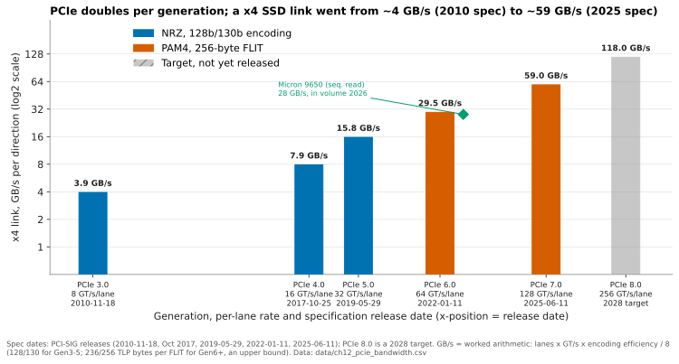

12. Interfaces and emerging tech¶
Depth: L2 · Reading time: ~10 min · Last verified: 2026-11-01 Prerequisites: Media physics for a semis person · Inside an SSD · Block protocols and NVMe-oF · The GPU data path
TL;DR¶
- PCIe doubles every generation; the drive link is rarely the bottleneck. A PCIe 6.0 x4 link carries ~29.5 GB/s each way, so in shared storage the network and software set throughput.
- CXL turns PCIe wires into a load/store memory bus. Expanders ship; pooling is starting; multi-host sharing is still in labs.
- EDSFF replaced the 2.5-inch drive in hyperscale and AI servers, fixing watts and NAND per bay. Everpure's proprietary DirectFlash Module (DFM) sidesteps some of those limits.
- FDP is commodity flash catching up with host-managed flash. It cuts write amplification without breaking software; Purity has managed raw NAND directly since DirectFlash launched.
- Optane is the case study for any new memory tier: good physics, but a thin price gap, a CPU-locked ecosystem and one fab. CXL memory and KV-cache tiers face the same tests.
Why this matters for Everpure strategy¶
Interfaces decide what can be commoditised. With standard form factors and placement hints, a hyperscaler can buy flash from four NAND makers and run its own software. That is the alternative Everpure's DirectFlash licensing has to beat at Meta and at the second top-five hyperscaler announced in August 20261. FDP and EDSFF narrow the gap between proprietary modules and commodity SSDs.
AI inference adds a second contest: the KV-cache tier between GPU HBM and networked flash, where CXL memory, local NVMe and shared flash such as PureKVA compete (Chapter 32). Optane shows how such tiers fail.
Core concepts¶
PCIe: the doubling machine¶
PCIe is a serial link of SerDes lanes: x4 for SSDs, x16 for GPUs and NICs. Each generation doubles the per-lane rate. The cadence stalled after PCIe 3.0 (November 2010)2. PCIe 4.0 took until October 20173, because 16 GT/s needed retimers and better board materials. Cloud and AI demand then restored a three-year rhythm: 5.0 in May 20194, 6.0 in January 20225, 7.0 in June 20256. PCIe 8.0, at 256 GT/s, is targeted for 20287.

Figure 12.1 — Each generation doubles the x4 link a drive uses; the first PCIe 6.0 SSD in volume reads at ~95% of its link, four years after the spec.
Data: data/ch12_pcie_bandwidth.csv
Per direction, bandwidth = lanes × rate × encoding efficiency ÷ 8. PCIe 6.0 x4 gives 32 GB/s raw, ~29.5 GB/s after flit overhead. Micron's 9650, the first Gen6 data-centre SSD in mass production, reads at 28 GB/s8.
The consequence is counter-intuitive. A 2U server with 24 such drives holds 24 × 29.5 ≈ 708 GB/s of drive bandwidth; two 400 GbE ports carry ~100 GB/s. In an array, the network (Chapter 10), CPUs and software bind long before the drive link. Faster links matter most for GPU-local NVMe holding checkpoints and KV cache (Chapter 11).
PCIe 6.0 one notch deeper: PAM4 and FLIT¶
With NRZ (one bit per symbol), 64 GT/s would push Nyquist to 32 GHz, where board losses are unmanageable. PCIe 6.0 adopted PAM4 (two bits per symbol), as 56G/112G Ethernet SerDes did earlier. The symbol rate stays at 32 GBaud, so the channel looks like PCIe 5.0's, but the three stacked eyes are each a third of the height. The raw error rate rises to roughly 10⁻⁶, against 10⁻¹² for NRZ generations.
Forward error correction (FEC) needs fixed-size blocks, so PCIe 6.0 introduced the FLIT. Each 256-byte flit carries 236 bytes of transaction data, a 6-byte link field, an 8-byte CRC and 6 bytes of FEC9. The FEC is deliberately light, single-symbol-correcting across three interleaves, so it adds only nanoseconds. The CRC catches the rest and triggers a flit replay10. For storage, dropping per-packet framing means small transfers (doorbells, completions, 64-byte CXL lines) waste less link, and PCIe and CXL now share one PHY and roadmap.
| PCIe 5.0 | PCIe 6.0 | PCIe 7.0 | |
|---|---|---|---|
| Per-lane rate | 32 GT/s | 64 GT/s | 128 GT/s |
| Signalling | NRZ | PAM4 | PAM4 |
| Encoding | 128b/130b + framing tokens | 256-byte FLIT, FEC + CRC | 256-byte FLIT |
| x16, raw, both directions | 128 GB/s | 256 GB/s | 512 GB/s |
| x4 SSD, per direction | ~15.75 GB/s | ~29.5 GB/s | ~59 GB/s |
Table 12.1 — PCIe 6.0 changed modulation and encoding at once; PCIe 7.0 kept both and doubled the symbol rate (x16 from PCI-SIG456; x4 is worked arithmetic).
CXL: memory semantics over PCIe wires¶
Compute Express Link runs three protocols on the PCIe PHY11: CXL.io (ordinary PCIe), CXL.cache (a device coherently caches host memory) and CXL.mem (the host loads and stores device memory). Type 1 devices (io + cache) are caching SmartNICs; Type 2 (all three) are accelerators whose memory joins the coherent space; Type 3 (io + mem) are memory expanders.
CXL.mem for the semis reader. The host's home agent sends 64-byte cache-line reads and writes, and the device returns data or completions. The device's DRAM is mapped into physical address space as host-managed device memory (HDM), usually exposed as a CPU-less NUMA node that software reaches with plain loads and stores. Passive expanders are host-coherent (HDM-H). CXL 3.0 added back-invalidate (HDM-DB). The device keeps a snoop filter and can recall lines from host caches, which is what lets several hosts share one region coherently11. Microsoft's Pond team measured direct-attached CXL memory at roughly 70–90 ns over local DRAM. That is a NUMA-hop penalty, not a storage one, and switches add more12.
flowchart LR
subgraph HA["Host A"]
CPUA["CPU + local DDR5"]
end
subgraph HB["Host B"]
CPUB["CPU + local DDR5"]
end
T1["Type 1 SmartNIC<br/>CXL.io + CXL.cache"]
T2["Type 2 accelerator with own memory<br/>io + cache + mem"]
T3["Type 3 expander, direct attach<br/>CXL.io + CXL.mem"]
SW{{"CXL switch"}}
P1["Pooled Type 3<br/>slices assigned per host, CXL 2.0"]
P2["Shared Type 3<br/>same lines visible to both hosts, CXL 3.x"]
CPUA --- T1
CPUA --- T2
CPUA --- T3
CPUA --- SW
CPUB --- SW
SW --- P1
SW --- P2Figure 12.2 — Direct-attached expansion ships, switched pooling is starting, and multi-host sharing (which needs CXL 3.x back-invalidate) is the frontier.
The spec runs well ahead of deployment. CXL 4.0 (November 2025) reached 128 GT/s on the PCIe 7.0 PHY, or 256 GB/s per direction on a x16 link, and added bundled ports that gang several links into one logical port (the consortium's white paper illustrates 768 GB/s per direction)13. Deployment lags:
- Direct attach: Azure's M-series preview (November 2025) uses Astera Labs' CXL 2.0 controllers, up to 2 TB each14.
- Pooling: Marvell has a CXL 2.0 switch in production and its next one sampling in Q3 202615.
- Rack-scale AI pooling: demonstrations, such as Samsung with AMD at OCP 202616.
The economics are modest: Pond estimated a 16-socket pool trims DRAM needs by about 7%17. CXL memory is DRAM at DRAM prices.
EDSFF: the form factor is a power contract¶
SNIA's EDSFF family replaced the 2.5-inch U.2 shape with ones designed for airflow, with power envelopes that scale with thickness. A form factor fixes watts and NAND packages per bay, and so fixes TB per rack unit.
| Form factor | Size (W × L; thickness) | Max sustained power (air) | Largest capacity seen (2026) | Typical use |
|---|---|---|---|---|
| U.2 (2.5-inch) | 70 × 100 mm; 15 mm | ~25 W [VERIFY: U.2 power class] | 245.76 TB (Micron 6600 ION)18 | ~24 bays per 2U; legacy servers and arrays |
| E1.S | 33.75 × 118.75 mm; 9.5 / 15 / 25 mm | ~12 W (5.9 mm) to ~25 W (25 mm heat sink)19 | [VERIFY: largest shipping E1.S] | Dense compute and GPU nodes, e.g. Meta's GenAI clusters20 |
| E1.L ("ruler") | 38.4 × 318.75 mm; 9.5 / 18 mm | ~25–40 W21 | 122.88 TB (Solidigm D5-P5336)22 | Up to ~32 bays per 1U [VERIFY]; capacity JBOFs |
| E3.S | 76 × 112.75 mm; 7.5 mm (1T) / 16.8 mm (2T) | 25 W (1T) / 40 W (2T)23 | [VERIFY: largest shipping E3.S] | Mainstream PCIe 5/6 servers; CXL memory modules |
| E3.L | 76 × 142.2 mm; 7.5 / 16.8 mm | 40 W (1T) / 70 W (2T)23 | 245.76 TB (Micron 6600 ION)18 | Capacity QLC in storage servers |
Table 12.2 — EDSFF replaced one universal bay with shapes sized to their power envelope; capacity now concentrates in E3.L and U.2, density in E1.S.
Two constraints bind at the top end. First, controller DRAM: a conventional SSD's flash translation layer keeps ~4 bytes of map per 4 KiB page, i.e. 1 GB of DRAM per TB, or ~245 GB for a 245 TB drive. Big QLC drives therefore map in coarser units, and small random writes pay in read-modify-write amplification. Second, the standard's power and volume per bay.
Everpure's DirectFlash Module escapes both because it is not an SSD. Purity runs one global FTL and treats modules as raw NAND, so no drive-sized DRAM map is needed, and Everpure sets the module's shape and thermals (Chapter 26). DFMs reached 300 TB by 202624, on a roadmap first set in 202325, while the largest standard drives ship at 245.76 TB. The price: only Purity can drive a DFM. Meanwhile, in July 2025 the SFF TA reopened the E1/E3 power and thermal specs26.
Data placement: ZNS, FDP and host-managed flash¶
NAND erases in large blocks, so when data with different lifetimes share a block, garbage collection (GC) must first copy the still-valid pages. If a block is 75% valid when collected, each host write costs 1 ÷ (1 − 0.75) = 4 NAND writes. That is a write amplification factor (WAF) of 4. The cure is to group data by lifetime so whole blocks die at once, which needs the host to tell the drive.
flowchart TB
subgraph CONV["Conventional SSD"]
direction LR
C1["Host writes LBAs, no hints"] --> C2["Drive mixes hot and cold in one block"] --> C3["GC copies live pages, WAF up to 3-4x"]
end
subgraph ZNS["Zoned Namespaces"]
direction LR
Z1["Host writes each zone sequentially"] --> Z2["Host resets zones and runs GC"] --> Z3["WAF near 1, software must be rewritten"]
end
subgraph FDP["Flexible Data Placement"]
direction LR
F1["Host tags writes with a placement handle"] --> F2["Drive steers handles to separate reclaim units"] --> F3["Blocks die together, hints optional"]
end
subgraph DF["Host-managed raw flash, DirectFlash style"]
direction LR
D1["Array software sees NAND blocks"] --> D2["One global map and GC schedule"] --> D3["Placement and wear decided with full knowledge"]
endFigure 12.3 — ZNS and FDP move placement knowledge from drive to host by degrees; host-managed flash such as DirectFlash moves all of it.
ZNS (NVMe TP4053, ratified June 202027) exposes zones that must be written sequentially. Software must become zone-aware, so adoption stayed niche. FDP (NVMe TP4146, ratified late 2022) was driven by Meta and Google with Samsung. Writes carry a placement identifier, and the drive keeps identifiers in separate reclaim units. A drive that ignores the hints still works2829, which is why hyperscalers chose FDP.
Semis bridge. ZNS is a software-managed scratchpad; FDP is a hardware cache with hints, like non-temporal stores; DirectFlash is one memory controller managing every bank. For Everpure, FDP gives commodity SSDs much of DirectFlash's WAF benefit while keeping drives multi-sourced.
Computational storage: why it stalled¶
Computational storage puts FPGAs or Arm cores in the drive to filter, compress or search data before it crosses PCIe. SNIA defined an architecture for it, and NVM Express added computational-program command sets [VERIFY: SNIA CS architecture v1.0 (2022) and NVMe computational command sets (2024)]. Outside transparent in-drive compression, and vendor-integrated modules such as IBM's FlashCore Modules (compression plus ransomware-detection statistics inside the array's own module30), adoption is thin:
- Data is striped. Erasure coding spreads a record across 10+ drives, so no single drive can filter it.
- Fragmentation. Every vendor shipped its own accelerator and toolchain.
- Procurement. Drive buyers pay for $/TB and reliability, not lock-in features.
- Compute moved up. Controllers, DPUs and GPUs took the offload; NVIDIA's BlueField-4 context-memory platform is computational storage at system level31.
Near-data compute wins in the array or DPU, where whole objects are visible, not in the drive.
Optane: the lessons for any new memory tier¶
timeline
title Optane and 3D XPoint, 2015 to 2025
2015 : Intel and Micron announce 3D XPoint
2017 : First Optane data-centre SSDs ship
2019 : Optane persistent-memory DIMMs launch with Intel Xeon Scalable
2021 : Micron exits 3D XPoint and sells its Lehi fab
: VAST qualifies Kioxia SLC flash as a second SCM source
2022 : Intel announces Optane wind-down with a 559 million dollar charge
2025 : Final Optane DIMM shipments scheduledFigure 12.4 — Optane went from launch to wind-down in about seven years; storage vendors that had a second source survived it.
The July 2022 wind-down and US$559 million charge are documented3233, as are Micron's March 2021 exit and June 2021 sale of the Lehi fab to Texas Instruments for US$900 million34; the 2015–2019 milestones are from background knowledge [VERIFY: Optane milestone dates 2015–2019]. Optane failed three non-technical tests:
- Price gap. Too dear against NAND, too slow against DRAM, while NAND $/GB kept falling.
- Ecosystem. The DIMMs needed Intel Xeons, and full value needed software rewritten for persistent memory, which few applications did.
- Single supplier. One fab, effectively one platform vendor. When Micron left in 2021 there was no second source; VAST had already qualified Kioxia SLC flash35.
What this implies for CXL memory and KV-cache tiers.
- Price gap. CXL memory is DRAM: a bigger tier, not a cheap one. Flash keeps a wide gap below DRAM, and TrendForce links part of 4Q26 SSD demand to hyperscalers buying QLC for KV cache36. Synopsys claims CXL offloads KV 3.6× faster than SSDs37; the test is cost per token.
- Ecosystem. CXL runs on Intel and AMD, an improvement. KV-cache frameworks (Dynamo, KVBM, LMCache) are this cycle's persistent-memory rewrite: the tier is only as useful as the software driving it.
- Single supplier. The risk moved from media to platform: NVIDIA's BlueField-4 design sets the KV-tier reference31, and every vendor's KV product, PureKVA included38, must fit it.
How Everpure approaches it vs. competitors¶
| Topic | Everpure | VAST | WEKA / DDN | Hyperscaler DIY |
|---|---|---|---|---|
| Drive form factor | Proprietary DFM, up to 300 TB24 | Standard QLC SSDs in DBoxes | Standard NVMe in partner servers | E1.S / E3 standard drives20 |
| Data placement | Purity global FTL on raw NAND | SCM write buffer, then wide sequential stripes | File-system layout over drive FTLs | FDP hints on commodity drives28 |
| SCM / Optane exposure | DirectMemory Cache (2019) used Intel Optane SSDs as an optional read cache in FlashArray//X70/X9039; not Optane-dependent today | Optane at first; Kioxia SLC second source since 202135 | None | DRAM + flash |
| KV-cache tier | PureKVA on FlashBlade, RDMA into GPU memory38 | CNode software on BlueField-4 DPUs31 | WEKA Augmented Memory Grid; DDN Infinia | Local NVMe; CXL pilots (Azure)14 |
| Supply chain | NAND from Micron and Kioxia; licence model at hyperscalers1 | Partner hardware, multi-vendor SSDs | Any qualified server/SSD | Multi-sourced standard SSDs |
Table 12.3 — Everpure is the only major vendor whose own flash module has no drive-level FTL (IBM also designs its FlashCore Modules, but they keep an in-module controller); that buys capacity, power and write-amplification advantages at the cost of a non-standard part.
Steelman the standard route. EDSFF plus FDP gives much of DirectFlash's benefit with four suppliers and no licence; the toll is per-drive DRAM and controllers. The 300 TB versus 245 TB lead must be re-earned each generation, and Sandisk's roadmap shows 512 TB in 202740. Steelman DirectFlash. A global FTL removes per-drive DRAM, controllers and over-provisioning, an edge that compounds as capacity grows. Two top-five hyperscalers have signed1.
History and trajectory¶
NVMe flash arrays, DirectFlash included, grew up on PCIe 3.0; GPUs then pulled the 2017–2025 sprint. Optane rose and fell in that window, and Intel redirected its memory-tier ambitions to CXL33. CXL went from direct attach (1.0, March 2019) to pooling (2.0, November 2020)41 and fabrics/sharing (3.0, August 202242; 3.1, November 2023 [VERIFY: 3.1 release day]), reaching 4.0 in November 202513. FDP displaced ZNS at hyperscale after 2022.
Watch through 2027: Gen6 platform volume, CXL 3.x switches leaving sampling, a bigger E3 power envelope, 512 TB standard drives, and KV tiers converging on NVIDIA's interfaces (Chapter 53).
Numbers that matter¶
| Metric | Value | Context | Source / date |
|---|---|---|---|
| PCIe 6.0 | 64 GT/s; 256 GB/s x16 raw, both directions | PAM4 + FLIT | PCI-SIG, 2022-01-115 |
| PCIe 7.0 | 128 GT/s; 512 GB/s x16, both directions | Released 2025-06-11 | PCI-SIG6 |
| PCIe 8.0 target | 256 GT/s, ~1 TB/s x16, by 2028 | Pathfinding | The Register, 2025-08-087 |
| x4 Gen6 link, per direction | ~29.5 GB/s | 4 × 64 Gb/s ÷ 8 × 236/256 | Worked example |
| First Gen6 SSD in volume | 28 GB/s read, 5.5M IOPS | Micron 9650 | Tom's Hardware via Borecraft, 2026-02-148 |
| CXL 4.0 x16 | 256 GB/s per direction raw; more with bundled ports | 128 GT/s, Nov 2025 | CXL Consortium13; worked arithmetic |
| CXL direct-attach latency adder | ~70–90 ns over local DRAM | Switches add more | Pond (Microsoft), ASPLOS '2312 |
| DRAM saved by CXL pooling | ~7% with a 16-socket pool | Azure trace study | Pond, ASPLOS '2317 |
| E3.L 2T power envelope | 70 W | E3.S 1T: 25 W | KIOXIA / SFF-TA-100823 |
| Largest standard SSD vs DFM | 245.76 TB vs 300 TB | Micron 6600 ION vs Everpure DFM | Micron, 2026-05-0518; B&F, 2026-08-1124 |
| Optane wind-down charge | US$559 M | Q2 2022 | Intel 10-Q32 |
Conversation playbook¶
Questions for a PM
- "If a hyperscaler can get FDP on 245 TB E3.L drives from four suppliers, what keeps DirectFlash ahead next cycle?" Strong: quantifies the gap per generation (TB per module, W per TB, DRAM avoided) and why it widens with capacity.
- "Where does PureKVA sit against CXL memory and local NVMe, on cost per token?" Strong: $/GB and latency per tier, and the hit rates that justify shared flash.
- "Which components are single-sourced today, and what did Optane teach us?" Strong: names NAND, controllers and DPUs, each with a mitigation.
Questions for an engineer
- "What does PCIe 6.0 change inside an array?" Strong: fewer lanes, switches and watts per GB/s, not headline throughput, because the network binds first.
- "Would CXL memory help a controller with dedup tables or metadata?" Strong: separates capacity (tables grow with TB) from persistence (CXL DRAM is volatile).
- "How does Purity's WAF compare with FDP drives on a mixed workload?" Strong: measured WAF, and what system-wide GC scheduling buys.
Don't say this:
- "PCIe 6.0 doubles array performance." The network and software usually bind first.
- "CXL makes memory cheap." It makes memory poolable. The bits are still DRAM.
- "Optane failed technically." It failed on economics, ecosystem and supply.
- "DFMs are just big SSDs." They have no drive FTL.
- "ZNS is the placement standard." Hyperscalers chose FDP.
Going deeper (optional, L3 pointers)¶
- PCIe 6.0 flit layout and FEC: Cadence's flit-mode walkthrough9 and Lockwood's notes10.
- CXL internals: Das Sharma, Blankenship and Berger43; the Linux back-invalidate work11.
- CXL pooling economics: Pond17. FDP design: the NVM Express blog28.
Key terms¶
- PAM4 — four-level signalling, two bits per symbol.
- FLIT — fixed 256-byte PCIe 6.0+ transfer unit with FEC and CRC.
- CXL Type 1/2/3 — caching device, accelerator with memory, memory expander.
- CXL.mem / HDM — load/store protocol and the device memory it maps.
- Back-invalidate — CXL 3.0 mechanism enabling multi-host sharing.
- Memory pooling — assigning slices of switched memory to hosts.
- EDSFF — data-centre SSD form factors (E1.S/E1.L/E3.S/E3.L).
- FDP / ZNS — NVMe placement hints / sequential-write zones.
- WAF — NAND writes per host write.
- SCM — persistent media between DRAM and NAND, such as Optane.
Sources¶
-
Everpure, "Everpure Lands New Design Win with Second Top-Five Hyperscaler," 2026-08-10. https://www.everpuredata.com/company/newsroom/press-releases/everpure-lands-new-design-win-with-second-top-five-hyperscaler.html (retrieved 2026-11-01). ↩↩↩
-
PCI-SIG (via Design-Reuse), "PCI-SIG Releases PCI Express 3.0 Specification," 2010-11-18. https://design-reuse.com/news/24978/pci-express-3-0-specification.html (retrieved 2026-11-01). ↩
-
PCI-SIG (via Design-Reuse), "PCI-SIG Releases PCIe 4.0, Version 1.0," 2017-10. https://us.design-reuse.com/news/42959/pcie-4-0-version-1-0.html (retrieved 2026-11-01). ↩
-
PCI-SIG (via Design-Reuse), "PCI-SIG Achieves 32GT/s with New PCI Express 5.0 Specification," 2019-05-29. https://us.design-reuse.com/news/46222/32gt-s-pci-express-5-0-specification.html (retrieved 2026-11-01). ↩↩
-
PCI-SIG via Business Wire, "PCI-SIG Releases PCIe 6.0 Specification Delivering Record Performance to Power Big Data Applications," 2022-01-11. https://www.businesswire.com/news/home/20220111005011/en (retrieved 2026-11-01). ↩↩↩
-
PCI-SIG via Business Wire, "PCI-SIG Releases PCIe 7.0 Specification," 2025-06-11. https://www.businesswire.com/news/home/20250611299049/en (retrieved 2026-11-01). ↩↩↩
-
The Register, "Confirmed: PCIe 8.0 will double version 7.0's speed and reach 256.0 GT/s," 2025-08-08. https://www.theregister.com/2025/08/08/pcie_8_spec_speed_announced/ (retrieved 2026-11-01). ↩↩
-
Borecraft (syndicating Tom's Hardware), "First PCIe 6.0 SSD enters mass production with 28GB/s speeds, 5.5 million IOPS and liquid cooling," 2026-02-14. https://borecraft.com/2026/02/14/first-pcie-6-0-ssd-enters-mass-production-with-28gb-s-speeds-5-5-million-iops-and-liquid-cooling-micron-9650-series-ssds-support-air-and-liquid-cooling/ (retrieved 2026-11-01). ↩↩
-
Cadence Community Blog, "Unravelling PCIe 6.0 Flit Mode Challenges," n.d. https://community.cadence.com/cadence_blogs_8/b/fv/posts/unravelling-pcie-6-0-flit-mode-challenges (retrieved 2026-11-01). ↩↩
-
G. K. Lockwood, "PCIe Gen6," n.d. https://www.glennklockwood.com/garden/pcie-gen6 (retrieved 2026-11-01). ↩↩
-
D. Bueso, "CXL Back-Invalidate," Linux Plumbers Conference 2025. https://lpc.events/event/19/contributions/2062/attachments/1810/3891/lpc25-dbueso-cxl-backinvalidate.pdf (retrieved 2026-11-01). ↩↩↩
-
H. Li et al., "Pond: CXL-Based Memory Pooling Systems for Cloud Platforms" (ASPLOS '23 slides), 2023. https://people.cs.vt.edu/huaicheng/s/asplos23-pond-slides-a.pdf (retrieved 2026-11-01). ↩↩
-
CXL Consortium, "CXL 4.0 White Paper," 2025-11. https://computeexpresslink.org/wp-content/uploads/2025/11/CXL_4.0-White-Paper_FINAL.pdf (retrieved 2026-11-01). ↩↩↩
-
Astera Labs, "Astera Labs' Leo CXL Smart Memory Controllers on Microsoft Azure M-series Virtual Machines Overcome the Memory Wall," 2025-11-18. https://www.asteralabs.com/news/astera-labs-leo-cxl-smart-memory-controllers-on-microsoft-azure-m-series-virtual-machines-overcome-the-memory-wall/ (retrieved 2026-11-01). ↩↩
-
Marvell, "Marvell Launches Next-generation CXL Switch, Enabling Memory Pooling to Break Through the AI 'Memory Wall'," 2026. https://www.marvell.com/company/newsroom/marvell-next-gen-cxl-switch-memory-pooling-breaks-ai-memory-wall.html (retrieved 2026-11-01). [VERIFY: search-summary only] ↩
-
StorageReview, "Samsung CXL Memory Pooling Demo With AMD at OCP 2026 Claims 38 Percent Lower TTFT and 3.3x Goodput for Agentic AI," 2026-10. https://www.storagereview.com/news/samsung-cxl-memory-pooling-amd-ocp-2026-cmm-d-agentic-ai (retrieved 2026-11-01). ↩
-
H. Li et al., "Pond: CXL-Based Memory Pooling Systems for Cloud Platforms," ASPLOS '23, 2023. https://www.microsoft.com/en-us/research/publication/pond-cxl-based-memory-pooling-systems-for-cloud-platforms/ (retrieved 2026-11-01). ↩↩↩
-
Micron Technology, "Industry-Leading 245TB Micron 6600 ION Data Center SSD Now Shipping," 2026-05-05. https://investors.micron.com/news/press-release/2026/Industry-Leading-245TB-Micron-6600-ION-Data-Center-SSD-Now-Shipping/default.aspx (retrieved 2026-11-01). ↩↩↩
-
SNIA, "EDSFF for Storage, Memory and Acceleration," SDC EMEA 2021. https://snia.org/sites/default/files/SDCEMEA/2021/snia-edsff.pdf (retrieved 2026-11-01). ↩
-
Meta Engineering, "Building Meta's GenAI Infrastructure," 2024-03-12. https://engineering.fb.com/2024/03/12/data-center-engineering/building-metas-genai-infrastructure/ (retrieved 2026-11-01). ↩↩
-
J. Hands (Intel), "EDSFF Overview," SNIA, 2018-12-07. https://www.snia.org/sites/default/files/SSSI/2%20-%202018-12-07%20EDSFF%20Overview.pdf (retrieved 2026-11-01). ↩
-
StorageReview, "Solidigm 122.88TB D5-P5336 Review," 2025. https://www.storagereview.com/review/solidigm-122-88tb-d5-p5336-review-high-capacity-storage-meets-operational-efficiency (retrieved 2026-11-01). ↩
-
KIOXIA, "EDSFF E3 Form Factor," n.d. https://europe.kioxia.com/en-mea/business/ssd/solution/edsff/e3.html (retrieved 2026-11-01). ↩↩↩
-
Blocks & Files, "Second hyperscaler plumps for Everpure's flash technology," 2026-08-11. https://www.blocksandfiles.com/flash/2026/08/11/second-hyperscaler-plumps-for-everpures-flash-technology/5285903 (retrieved 2026-11-01). ↩↩↩
-
Gigazine, "Pure Storage sets goal of realizing 300 TB SSD by 2026," 2023-03-08. https://gigazine.net/gsc_news/en/20230308-pure-storage-300-tb-ssd (retrieved 2026-11-01). ↩
-
SNIA, "EDSFF Taking Center Stage in the Data Center," n.d. https://www.snia.org/sites/default/files/SSSI/EDSFF%20Taking%20Center%20Stage%20in%20the%20Data%20Center.pdf (retrieved 2026-11-01). ↩
-
NVM Express, "New NVMe Command Sets: Zoned Namespace (ZNS) and Key Value (KV)" (presentation; TP4053 ratified June 2020), n.d. https://nvmexpress.org/wp-content/uploads/New-NVMe%C2%AE-Command-Sets-Zoned-Namespace-ZNS-Key-Value-KV.pdf (retrieved 2026-11-01; search-summary only). ↩
-
NVM Express, "Overcoming the Write Amplification Problem with NVM Express Flexible Data Placement," n.d. https://nvmexpress.org/nvmeflexible-data-placement-fdp-blog/ (retrieved 2026-11-01). ↩↩↩
-
Samsung Semiconductor, "Hyperscalers Embrace Flexible Data Placement (FDP) to Increase Performance and Lower TCO," n.d. https://semiconductor.samsung.com/news-events/tech-blog/hyperscalers-embrace-flexible-data-placement-fdp-to-increase-performance-and-lower-tco/ (retrieved 2026-11-01). ↩
-
IBM, "IBM FlashSystem," product page, n.d. https://www.ibm.com/flashsystem (retrieved 2026-11-01; search-summary only). ↩
-
NVIDIA Newsroom, "NVIDIA BlueField-4 Powers New Class of AI-Native Storage Infrastructure for the Next Frontier of AI," 2026-01-05. https://nvidianews.nvidia.com/news/nvidia-bluefield-4-powers-new-class-of-ai-native-storage-infrastructure-for-the-next-frontier-of-ai (retrieved 2026-11-01). ↩↩↩
-
Intel Corporation, "Form 10-Q for the quarter ended July 2, 2022," 2022-07. https://www.sec.gov/Archives/edgar/data/50863/000005086322000030/intc-20220702.htm (retrieved 2026-11-01). ↩↩
-
AnandTech, "Intel To Wind Down Optane Memory Business – 3D XPoint Storage Tech Reaches Its End," 2022-07-28. https://www.anandtech.com/show/17515 (retrieved 2026-11-01). ↩↩
-
TechTarget, "Micron 3D XPoint supply will end with $900M fab sale to TI," 2021-06/07. https://www.techtarget.com/searchstorage/news/252503484/Micron-3D-XPoint-supply-will-end-with-900M-fab-sale-to-TI (retrieved 2026-11-01; search-summary only). ↩
-
Blocks & Files, "VAST Data lessens Optane SSD dependency," 2021-11-05. https://blocksandfiles.com/2021/11/05/vast-data-lessens-optane-ssd-dependency/ (retrieved 2026-11-01). ↩↩
-
TrendForce, "AI Server Demand Sustains Memory Contract Price Increases in 4Q26, While Consumer-Side Pressure Persists," 2026-09-30. https://www.trendforce.com/presscenter/news/20260930-13258.html (retrieved 2026-11-01). ↩
-
StorageReview, "Synopsys CXL 4.0 IP hits 128 GT/s, claims 3.6x KV cache offload over SSDs," 2025-12. https://www.storagereview.com/news/synopsys-cxl-4-0-ip-hits-128-gt-s-claims-3-6x-kv-cache-offload-over-ssds (retrieved 2026-11-01). ↩
-
StorageReview, "Everpure Adds PureKVA to FlashBlade, Claims Up to 20x Faster Time to First Token, and Makes DeepReduce Always-On," 2026. https://www.storagereview.com/news/everpure-purekva-flashblade-20x-time-to-first-token-always-on-deepreduce (retrieved 2026-11-01). ↩↩
-
Pure Storage, "DirectMemory Cache: Fast Just Got Faster" (blog), 2019. https://blog.purestorage.com/?p=77918 ; Pure Storage, "DirectMemory Cache" (data sheet), n.d. https://www.purestorage.com/content/dam/pdf/en/datasheets/ds-direct-memory-cache.pdf (both retrieved 2026-11-01; search-summary only). ↩
-
Blocks & Files, "Sandisk unveils 256 TB SSD for AI workloads, shipping in 2026," 2025-08-05. https://www.blocksandfiles.com/ai-ml/2025/08/05/sandisk-unveils-256-tb-ssd-for-ai-workloads-shipping-in-2026/1589534 (retrieved 2026-11-01). ↩
-
CXL Consortium, "CXL Overview and Evolution," Hot Chips 34 tutorial, 2022-08. https://hc34.hotchips.org/assets/program/tutorials/CXL/Hot%20Chips%202022%20CXL%20Overview%20and%20evolution.pdf (retrieved 2026-11-01; search-summary only). ↩
-
Phoronix, "CXL 3.0 Specification Released - Doubles The Data Rate Of CXL 2.0," 2022-08-02. https://www.phoronix.com/news/CXL-3.0-Specification-Released (retrieved 2026-11-01). ↩
-
D. Das Sharma, R. Blankenship, D. Berger, "An Introduction to the Compute Express Link (CXL) Interconnect," arXiv 2306.11227, 2023. https://arxiv.org/pdf/2306.11227 (retrieved 2026-11-01). ↩